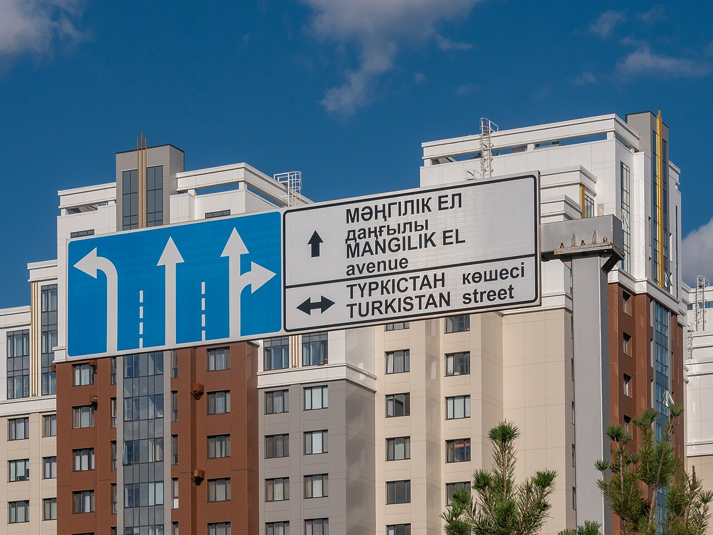

O'zbek, rus, ingliz — ko'pchiligimiz bir necha tilda gaplashamiz. “Ikki tillilar aqlliroq” degan da'vo rostmi? Javob kutilganidan qiziqroq.
Ko'p yillar davomida tadqiqotlar ikki tilda gaplashadigan odamlar diqqatni boshqarish, rejalashtirish va vazifalar orasida almashishda ustunlikka ega ekanini ko'rsatgandek edi. G'oya mantiqiy: ikki tilli odam doimo bitta tilni “o'chirib”, boshqasini ishlatadi — bu miya uchun mashq.

2014-yilda Edinburg universiteti olimlari Anxela de Bryuyn, Barbara Trekkani va Serjo Della Sala qiziq savol berdi: konferensiyalarda taqdim etilgan tadqiqotlarning qaysilari keyinchalik jurnallarda chop etilgan? Ular 104 ta konferensiya tezisini ko'rib chiqdi. Taxminan yarmi ikki tillilik ustunligini qo'llab-quvvatlagan, yarmi esa uni topmagan yoki rad etgan.
Lekin jurnalda chop etilganlar orasida manzara boshqacha: ustunlikni topgan tadqiqotlarning 63 foizi nashr qilingan, topmaganlarning esa atigi 36 foizi. Ya'ni ijobiy natijalar deyarli ikki baravar ko'p chop etilgan — bu “nashr tarafkashligi” deb ataladi.
Fanda ham “qiziqarli” natija ko'proq e'tibor oladi — shuning uchun “zerikarli” natijalarni ham bilish kerak.
Yo'q. Bu tadqiqot ikki tillilikning kognitiv foydasi yo'qligini isbotlamaydi — faqat u avval o'ylangandek katta va aniq bo'lmasligi mumkinligini ko'rsatadi. Ijtimoiy va amaliy foydasi esa shubhasiz: yangi odamlar, kitoblar, universitetlar va imkoniyatlar.
Manba: de Bruin, Treccani & Della Sala, “Cognitive Advantage in Bilingualism: An Example of Publication Bias?”, Psychological Science, 2015; K. Hopkin, Scientific American, 2014. Matn — o'zbek tilidagi erkin qisqacha bayon.